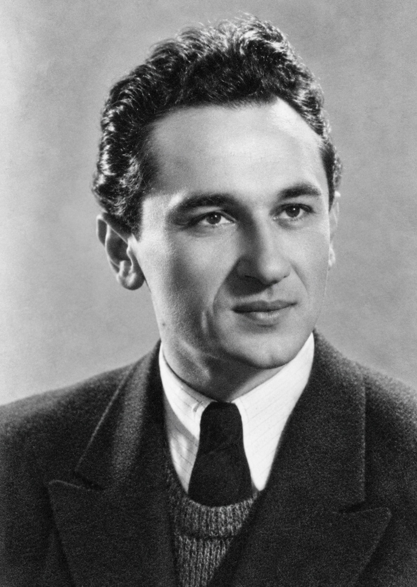
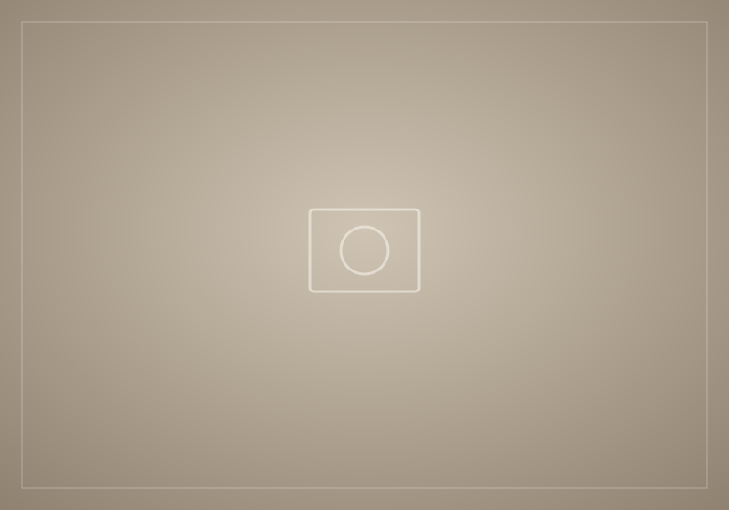

George
Teodorescu
1915 – 1952
Un sculptor între
România, Franța și Argentina
Sculptorul George Teodorescu a trăit între România, Franța și Argentina, în mijlocul unui cerc de artiști și intelectuali din care făcea parte și Constantin Brâncuși.

“Am cioplit mult în mine însumi” G. Teodorescu

Viață
O viață între România, Franța și Argentina.
Lucrări
Sculpturi de George Teodorescu.
Arhivă
Scrisori, fotografii, articole de presă și mărturii.
Cercul lui George Teodorescu
Legăturile sale cu artiști, scriitori și intelectuali din România și Paris.
Argentina
Un nou capitol la Buenos Aires (1948–1951).